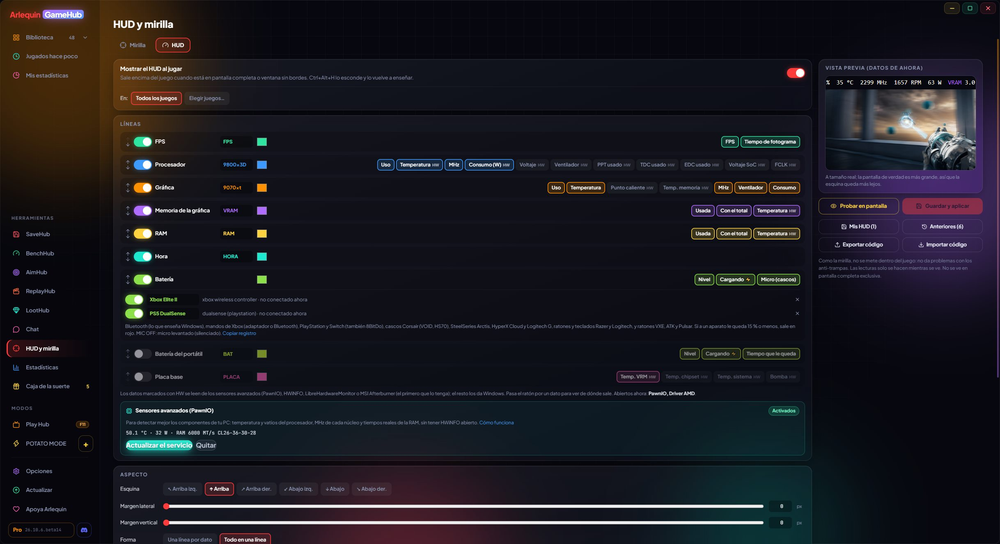
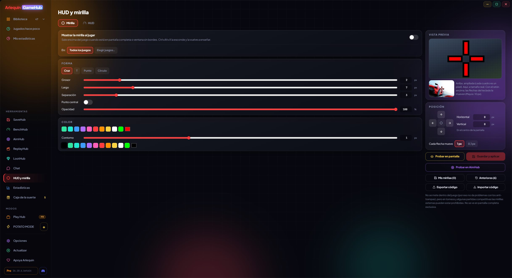

Всё нужное — поверх игры
HUD с вашим FPS, температурами и энергопотреблением и прицел под вас. Без вмешательства в игру: никаких проблем с античитами.
HUD: ваши данные во время игры
FPS, процессор, видеокарта, память и время в углу игры — как вам удобно.
Каждая строка — это группа (FPS, видеокарта, процессор, видеопамять, ОЗУ и время) со своей подписью и цветом, и вы выбираете, какие данные показывает каждая. Порядок любой, отключаются по отдельности.
Вы выбираете угол, отступ, по строке на пункт или всё в одну строку, размер и начертание шрифта, жирность, цвета, фон, обводку текста, чтобы читалось без фона, и частоту обновления (от 0,25 до 2 секунд).
Он может показывать и заряд беспроводных устройств, по строке на устройство (⚡ во время зарядки, красный — когда мало): геймпады PlayStation, Xbox, Switch и 8BitDo; гарнитуры Corsair, Razer, SteelSeries, HyperX и Logitech; мыши и клавиатуры Logitech и всё, что подключено по Bluetooth.
Пока вы его редактируете, видно превью с реальными данными вашего ПК в этот момент. Данные читаются только когда он виден: со скрытым HUD ничего не тратится.
HUD также можно поставить внизу по центру, в нём есть строка с зарядом ноутбука (и заряжается ли он), а строка видеопамяти может показывать её температуру. Он читает заряд всё большего числа устройств, вроде гарнитур Razer BlackShark V3 Pro или мышей VXE, ATK и Pulsar с приёмником.
Как пользоваться
- Инструменты → HUD и прицел → HUD.
- «Попробовать на экране» показывает его сразу, поверх всего.
- Появляется сам, когда вы играете; Ctrl+Alt+H скрывает и снова показывает его.

Что показывает
Базовое даёт Windows; температуры и энергопотребление — ваша программа мониторинга.
Ничего не устанавливая (те же данные, что у Диспетчера задач): FPS и время кадра, загрузка процессора и реальные МГц, загрузка видеокарты, МГц, температура и вентилятор, использование видеопамяти и ОЗУ (с общим объёмом, если хотите).
С открытой программой мониторинга: температура и потребление процессора, температура ОЗУ, горячая точка и температура памяти видеокарты и её потребление в ваттах (на AMD — TBP, вся плата). Без специального драйвера Windows эти данные не даёт: GameHub читает их из программы, которой вы уже пользуетесь. В версии для прямой загрузки можно также включить «Расширенные датчики» (по желанию, с разрешением Windows), чтобы получать их без другой программы; в версии из Microsoft Store используйте программу мониторинга.
Если открыто несколько, каждое значение берётся из первой, где оно есть, а если одна закроется, он незаметно переходит к следующей. В редакторе при наведении на значение видно, из какой программы оно взято. Если программы нет, эти значения показываются как «—» (или скрываются, если выберете).
Как пользоваться
- HWiNFO: отметьте «Shared Memory Support» в его настройках (в бесплатной версии отключается каждые 12 часов).
- LibreHardwareMonitor: Options → Remote Web Server → Run.
- MSI Afterburner: просто держите его открытым (с RTSS даёт ещё и FPS).
Не работают
- HWMonitor: не делится данными с другими программами.
Прицел под вас
По центру по умолчанию и с точностью до десятой доли пикселя.
В редакторе выбираются форма (крест, T, точка или круг), толщина, длина, зазор, радиус, точка в центре, цвет, прозрачность и обводка с её цветом. Вы видите увеличенное превью, где каждый квадрат — пиксель, и ещё одно в натуральную величину.
Он появляется точно в центре экрана, и его можно сдвигать по пикселю или шагами по 0,1 пикселя: с дробями он распределяется на два пикселя, как в классических играх, чтобы попасть точно в цель (чуть менее чётко, ведь у экрана нет половинок пикселя).
Многие пользуются им в обычных матчах, но на турнирах и в некоторых соревновательных матчах сторонние прицелы могут быть запрещены: проверьте правила того, во что играете.
Как пользоваться
- Инструменты → HUD и прицел → Прицел.
- Стрелки на экране или на клавиатуре, чтобы двигать его (Shift: 10 px).
- Появляется сам, когда вы играете; Ctrl+Alt+X скрывает и снова показывает его.

Сторож разъёма видеокарты
Предупреждает, прежде чем сгорит 16-контактный разъём вашей видеокарты.
У некоторых видеокарт с 16-контактным разъёмом (12VHPWR / 12V-2x6) разъёмы сгорали из-за плохого контакта. Пока вы играете, GameHub следит за тем, что видеокарта показывает через HWiNFO, и если что-то странное длится несколько секунд (а не один скачок), предупреждает уведомлением Windows и красной строкой поверх игры.
- ASUS ROG Astral и ROG Matrix (RTX 4090, 5080, 5090): ток на каждом контакте. Предупреждает, если один перегружен или если по одному ничего не идёт, а по остальным идёт (нет контакта).
- Другие NVIDIA RTX 40 и 50 с 16 контактами: напряжение на разъёме. Если оно долго проседает, плохой контакт или кабель изнашивается.
- Другие карты (как Sapphire NITRO+ RX 9070 XT PhantomLink): готов к тому моменту, когда HWiNFO сможет читать датчики их разъёма.
Он не выключает ПК и не закрывает игру: он говорит, что происходит и что делать (сохраниться, закрыть игру и проверить, что кабель вставлен до конца и без резких изгибов у разъёма).
Как пользоваться
- Работает сам при открытом HWiNFO (с общим доступом к данным).
- Видеокартам с 8-контактными разъёмами он не нужен.
Сохранить, восстановить и поделиться
Ваши HUD и прицелы — ровно такими, какими вы их оставили.
Сохраните HUD или прицел под именем («Соревновательный», «Зелёный для Valorant»…) и возвращайтесь к ним когда угодно. Каждый раз, когда вы сохраняете другой, предыдущий остаётся в «Предыдущих» (последние 20) на всякий случай: их можно смотреть, вернуть или удалить.
Выберите, показывать их во всех играх или только в выбранных: не каждая игра — шутер. И делитесь ими кодом (ARLQ-MIRA-… или ARLQ-HUD-…), чтобы друг их попробовал: создание кода — часть ArlequinPro, а загрузка бесплатна для всех.
Как пользоваться
- «Мои прицелы» / «Мои HUD» и «Предыдущие» в редакторе.
- «Экспортировать код» (ArlequinPro) и «Импортировать код» (бесплатно).
- В бете «Импортировать код» принимает также коды прицелов CS2 и VALORANT, подтягивает прицел CS2 с вашего ПК, а «Проверить в AimHub» показывает его на разных фонах.
Попробуете?
⬇ Скачать напрямую 🛍️ Скачать в Microsoft StoreWindows 10 и 11 (64 бита) · Бесплатно · Обновляется сам